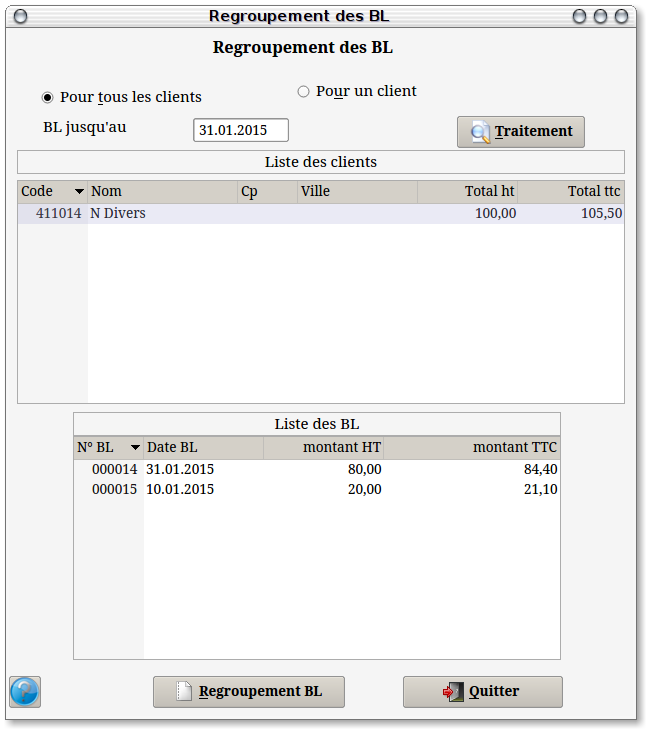

~ Facturation Laurux ~

~ Facturation Laurux ~ |
|
|
|
Regroupement des BL.

A partir de cet écran on va pouvoir sélectionner le ou les
clients à traiter ainsi que la période correspondante.
La date proposée est celle du dernier jour du mois.
Elle est modifiable
Une fois ces données saisies ont clique sur le
bouton "Traitement"
pour faire apparaitre dans la partie supérieure de l'écran l'ensemble
des clients qui seront traités.
Si le bouton "Pour tous
les clients"
est coché alors le traitement se fera pour l'ensemble des comptes
présents dans la partie haute, sinon le programme traitera seulement la
ligne sélectionnée, c'est à dire celle qui laissera apparaitre le
détail des bons dans la partie basse.
Que peut-on faire à partir de ces écrans ?
On peut supprimer un client de la liste en le sélectionnant puis en tapant 'Suppr'.
On peut supprimer une ligne de bon en le sélectionnant puis en appuyant sur la touche 'Suppr'.
Lorsque le travail de préparation sera terminé on cliquera sur le bouton "Regroupement BL" pour procéder à l'impression des documents.
----------------------------------------------------------------------------------------------------------------------